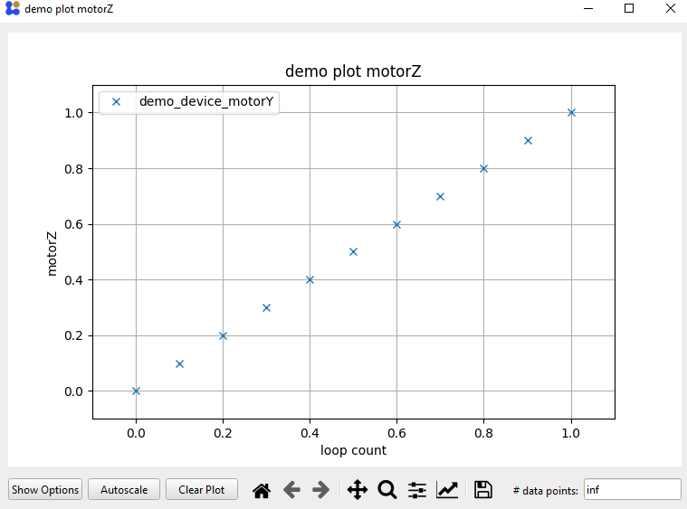

Setting Up Plots in Protocols
You can display live-plots in the measurement protocols to have a better understanding of what is going on during the measurement.
1. Configure Plots
To configure the plots click Define Plots / Fits. Here we bill be doing this for the for-loop measurement protocol created here
Add a new plot by clicking the ➕ symbol and choosing a plot type.

The x-axis is set by either typing the channel into the field or by right-clicking and adding the channel value with Insert Channel Value. We will be plotting the motorZ channel (y-axis) against For_Loop_Count (x-axis). Add a new y-axis with the ➕ symbol next to y-axes. Enter the motorZ channel via right click into the formula field. As with most fields you can to any mathematical operation as a string in this field (see examples above for more information). Select if the y-axis should be plotted on the left or right side of the x-axis.

Give the plot a x-label and y-label as well as a title.
A finished plot configuration (without a fit) could look like this for example

2. Run Protocol with Plots
If you then run the protocol the plot is displayed and updated live.
⚠ To get this plot you have to modify the protocol from before by adding a small
Waittime of0.1seconds as the internal software sweep is too fast for the plot to follow.

{kind=link}